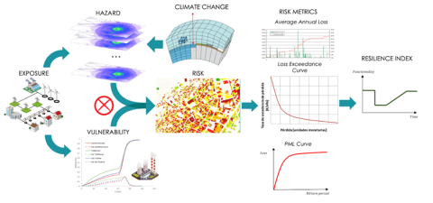
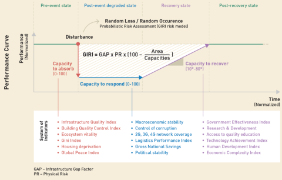

The Global Infrastructure Risk Model and Index (GIRI)
The Global Infrastructure Risk Model and Resilience Index (GIRI) has been specially commissioned by CDRI and provides the first ever globally comparable set of financial risk metrics for infrastructure assets.
GIRI is the first fully probabilistic model to identify and estimate the risk associated with major hazards (earthquake, tsunami, tropical cyclone wind and storm surge, landslide, flood, and hydrological drought), in the principal infrastructure sectors (power, communications, ports and airports, roads and railways, water and wastewater, health, education, and buildings) in all countries and territories.
Risk has been estimated for the existing climate and two different climate change scenarios.

- The hazard input data was obtained by developing comprehensive sets of simulated events accounting for all the possible manifestations of each hazard, including lower and upper bounds of climate change for the hydrometeorological hazards, and providing information about the geographical distribution of the hazard intensities and their frequency of occurrence.
- The exposure database was assembled by geolocalising exposed assets and networks in each infrastructure sector, from available public data sources.
- Economic values were assigned to each exposed asset using a bottom-up procedure. The total value of the infrastructure assets in each country was then scaled to reflect the value of the capital stock, relative to other countries.
- Vulnerability functions for all hazards were developed for over 50 infrastructure archetypes. The vulnerability functions relate the hazard intensities to expected asset losses in a continuous, qualitative, and probabilistic manner.
- The associated damage and loss for each asset included in the exposure database is then calculated for each stochastic hazard event. The distribution of probable future losses is generated from the exceedance rates for each loss value and presented, for each sector, as a loss exceedance curve (LEC) and derived financial risk metrics such as the Average Annual Loss (AAL).
The GIRI composite indicator
The purpose of the GIRI resilience index is not to rank countries, but rather to understand how the capacities to absorb, respond and restore condition a country’s performance, represented by the shape of its resilience performance curve.
For instance, countries may have similar GIRI values, but their resilience curves can differ. One country may exhibit shortcomings in its capacity to absorb but possess stronger capacities to respond and recover. While the area under the resilience curve, and thus the overall GIRI value may be similar, in different countries, each has a different range of capacities.
Methodology and indicators
The GIRI composite indicator has relative values between 0-100. The lowest value (0) indicates that infrastructure has low resilience, and the highest value (100) means resilience is high. The diagram in figure below shows how the GIRI composite indicator can be dis-aggregated into the three capacities each of which in turn can be dis-aggregated into component indicators.

The capacity to absorb is represented as a sudden loss in the performance or capacity of infrastructure assets to provide essential services due to loss and damage, associated with hazard events. It is conditioned by physical risk and social and economic variables which may aggravate the potential impact of the hazard events, leading to larger losses in performance.
The capacity to respond is represented as a horizontal line, whose length represents the ability to respond fast and efficiently. The shorter the line, the higher the capacity to respond following the event, as a first phase of recovery.
The recovery stage is assumed to start after the response phase and continues until the assets have been restored and services recovered. The inclination of the slope represents strong (80°) or weak (10°) capacity to recover quickly and efficiently.
Six indicators were chosen for each
capacity, on the basis of their
relevance and the availability of
publicly accessible, reliable global
data in as many countries as possible.
Many other indicators were considered
but not chosen because they did not meet
these criteria.
The indicators that
compose each capacity are normalised to
allow their aggregation. All indicators
were assigned the same weight. For
instance, the indicators for the
capacity to absorb, and for the capacity
to respond range from 0 to 100, where
the higher values mean a small drop in
performance and rapid and efficient
response respectively, and lower values
mean a high drop and a low and
inefficient response respectively.
Inverted scaling was used to provide
appropriate measurement.